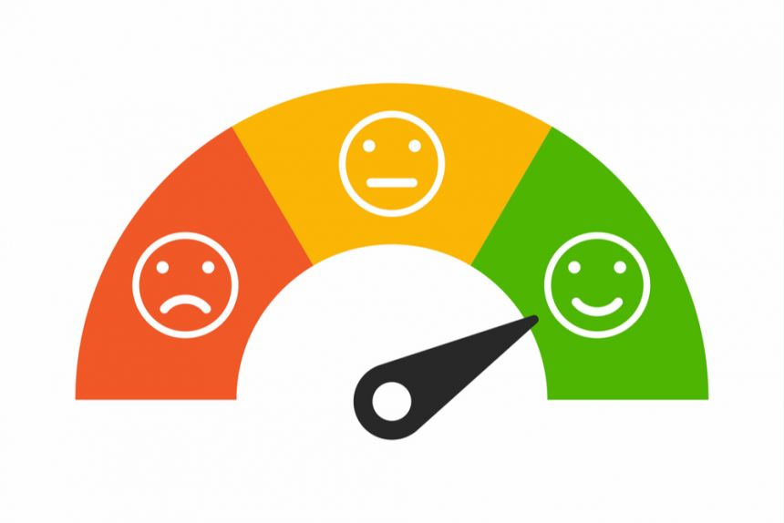

Resumen
Proyecto de NLP para clasificar el sentimiento (positivo/neutral/negativo) en comentarios
de usuarios. Incluye limpieza de texto, tokenización, vectorización y un modelo base
(por ejemplo, Logistic Regression / SVM). Se reportan métricas de precisión, recall y F1.
Vista general

Sube tu imagen a /img/sentiment-cover.jpg y ajusta esta ruta si usas otro nombre.
Detalles técnicos
- Lenguajes/Librerías: Python, pandas, scikit-learn, nltk/spacy, matplotlib/plotly.
- Dataset: Indica la fuente (Kaggle/propio). Tamaño y variables clave.
- Preprocesamiento: minúsculas, limpieza de signos, stopwords, lematización (opcional).
- Features: Bag-of-Words / TF-IDF; n-grams si aplica.
- Modelo: Regresión Logística / SVM (o el que uses).
- Validación: train/test split o k-fold; métricas: accuracy, precision, recall, F1.
Resultados
Resumen de resultados con números (ejemplo):
- Accuracy: 0.87
- Precision: 0.86 · Recall: 0.85 · F1: 0.85
Incluye hallazgos cualitativos (palabras más influyentes, ejemplos de aciertos/errores, etc.).
Reproducibilidad
🔗 Repositorio / Notebook
🔗 Demo (opcional)
Actualiza los enlaces al repo/notebook y (si tienes) una demo en Streamlit/HF Spaces.
← Volver al portafolio